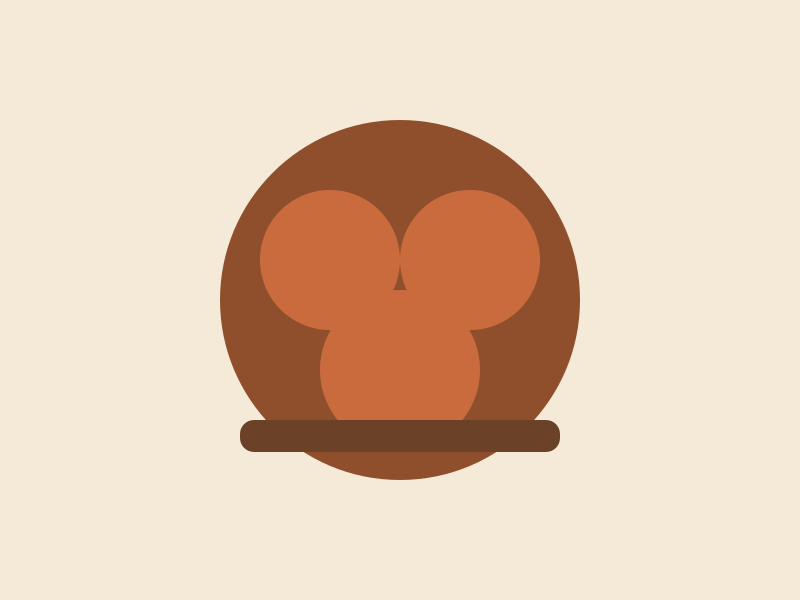
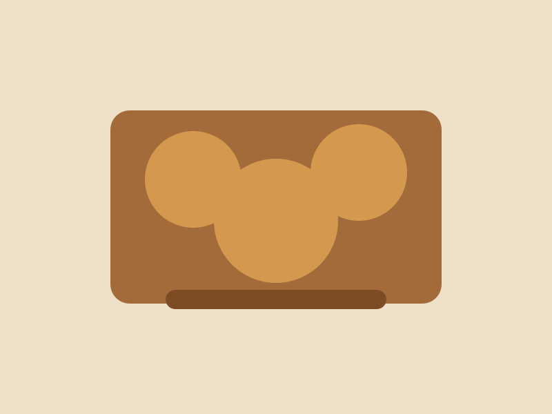
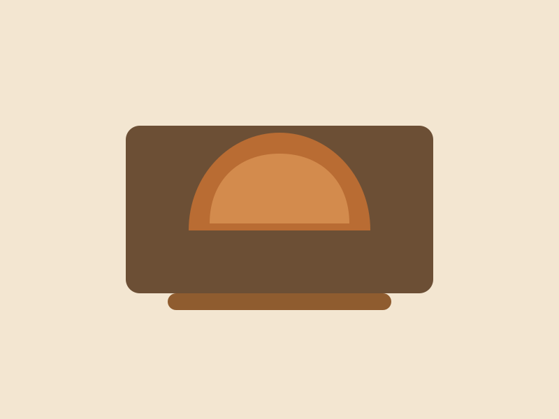

Photo gallery



Recipe
Try this simple sautéed mushroom toast for a cozy weeknight meal.
Ingredients
- Fresh mushrooms
- Butter or olive oil
- Garlic
- Salt and pepper
- Toast and herbs
Steps
- Warm a pan and cook the mushrooms until they release their moisture.
- Add garlic, salt, and pepper, then finish with herbs.
- Serve over toast for a simple and satisfying meal.
Grow tutorial
More videos
Visit our YouTube channel for more growing tips, mushroom recipes, and behind-the-scenes updates.
Watch on YouTube